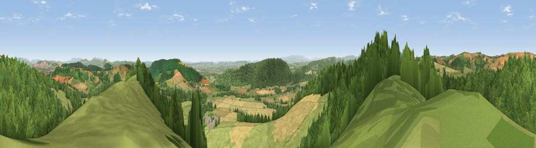

Viewpoint near Lingen
#2611 in England · top 5% of its area beats it · near LingenThe view, rendered

A 360° render of this exact spot computed from the terrain model, tree cover and land cover — summer colours, afternoon light, calibrated against photographs of famous viewpoints. Real trees, hedges and buildings will differ in detail.
The panorama
Grey silhouette: terrain skyline in each direction (720 bearings, Earth curvature and refraction included). Dashed green: skyline with trees (+15 m) and buildings (+8 m) as obstacles. Blue strip: how far the ground is visible on each bearing.
Where the view opens
Wedge length = distance to the farthest visible ground on that bearing (vegetation-aware). Rings at 10, 25 and 50 km.
What fills the view
46% woodland · 37% grassland · 16% cropland
Angular shares of the visible panorama (visual magnitude), not map area. Landscape diversity 0.45 (0–1 Shannon).
Key numbers
More beautiful places nearby
The staircase of upgrades: each row has a higher view potential than everything closer. Driving times are estimates from straight-line distance, calibrated against real road routing — check an actual route before setting out.
| Place | Direction | Drive | Score |
|---|---|---|---|
| Harley's Mountain | N · 3 km | ~8 min | 76.8 |
| Viewpoint near Shobdon | ESE · 3 km | ~8 min | 77.9 |
| Rushock Hill | SW · 9 km | ~17 min | 80.2 |
| Viewpoint near Leinthall Starkes | ENE · 10 km | ~19 min | 80.3 |
| Gatley Hill | ENE · 10 km | ~20 min | 82.6 |
| Viewpoint near Asterton | N · 23 km | ~38 min | 83.0 |
| Titterstone Clee | ENE · 27 km | ~43 min | 83.8 |
| The Lawley | NNE · 35 km | ~53 min | 85.8 |
52.28702, -2.95617 · source: screening · position refined by local search. Computed location — check access rights before visiting.